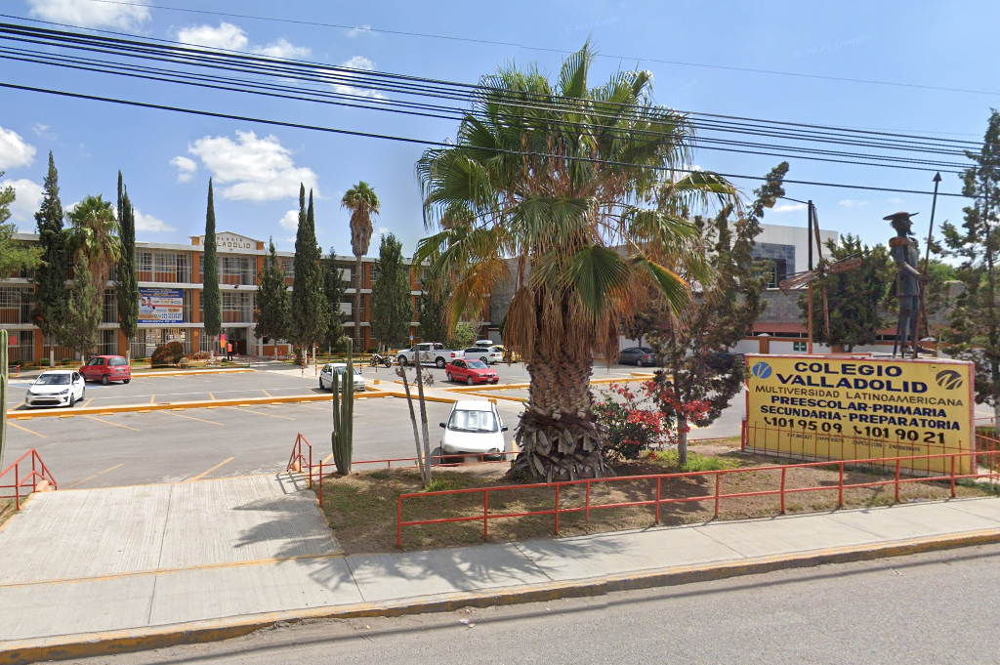
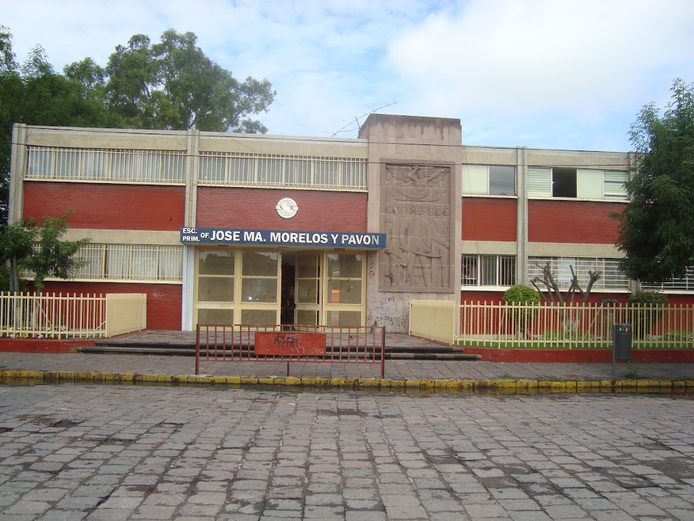
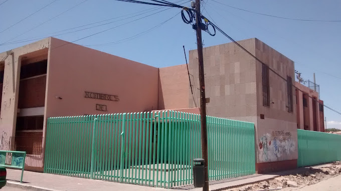

primaria
primarias en las que estuve
COLEGIO VALLADOLID
colegio donde pase la primaria los primeros 3 grados
paginaEscuela Primaria Of. José María Morelos y Pavón
primaria donde pase cuarto grado
paginahombres del mañana
primaria donde pase quinto y sexto grado
paginaeducacion media y superior
lo demas pues